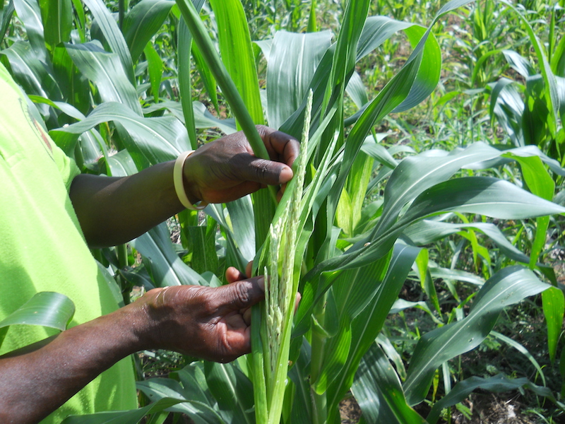
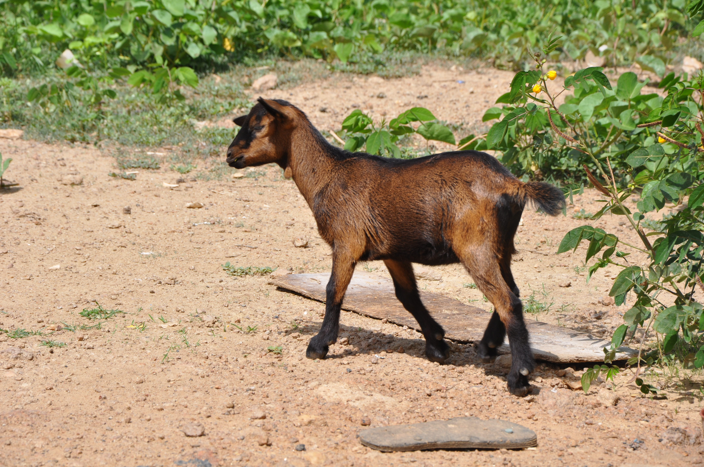

STAARS Themes:
- Dynamics of agriculture inputs use, technological change, and productivity growth in sub-Saharan Africa.
- Rural factor market performance, labor exits and productivity in sub-Saharan Africa.
- Food security, nutrition and health linkages in sub-Saharan Africa in sub-Saharan Africa.
- Poverty dynamics and resilience against shocks in sub-Saharan Africa.
STAARS Objectives:
-

- Initiate a process whereby the demands for research useful to policymakers and their current challenges are considered in the design of academic research.
- Perform rigorous analysis on publicly available and meticulously collected LSMS-ISA and other micro-level panel data sets.
- Heighten the exposure of the LSMS-ISA data and encourage others, particularly young African scholars, to make use of the richness of these publicly available datasets.
- Provide capacity building opportunities for African and Africa-based researchers by working with and alongside researchers at Cornell University.
- Create a network of researchers using the data and enable these researchers to share thoughts on research questions, variable creation, and results.
 The economies of Africa are finally enjoying robust economic growth, and the region shows early signs of agricultural productivity growth that can be stimulated further by appropriate policy interventions to help reinforce and sustain that growth. But much remains to be done. African agriculture today remains relatively unproductive by global standards, with an especially pronounced agricultural labor productivity gap that directly explains its high and persistent levels of ultra-poverty spatially concentrated in rural areas.
Virtually every one of today’s high income economies enjoyed sustained agricultural productivity growth coupled with transformation of the rural non-farm economy that jointly sparked rapid industrialization and inclusive economic growth. The ‘structural transformation’ central to economic development describes the process by which low-income societies, in which agriculture absorbs most labor and generates most economic output, become high-income societies characterized by a relatively smaller but more productive agricultural sector.
 In order to develop policy and programmatic interventions that promote a progressive structural transformation of African agriculture and that ignite more broad-based, inclusive, and sustainable income and productivity growth, policymakers need rigorous evidence on the causal factors that drive differences in productivity and well-being dynamics in rural Africa. The Structural Transformation of African Agriculture and Rural Spaces (STAARS) project pursues in-depth, rigorous, policy-oriented research on the causal determinants of productivity and income growth, asset accumulation, and effective risk management in African agriculture and rural spaces.
In order to develop policy and programmatic interventions that promote a progressive structural transformation of African agriculture and that ignite more broad-based, inclusive, and sustainable income and productivity growth, policymakers need rigorous evidence on the causal factors that drive differences in productivity and well-being dynamics in rural Africa. The Structural Transformation of African Agriculture and Rural Spaces (STAARS) project pursues in-depth, rigorous, policy-oriented research on the causal determinants of productivity and income growth, asset accumulation, and effective risk management in African agriculture and rural spaces.
The Structural Transformation of African Agriculture and Rural Spaces (STAARS) project is a collaborative venture between the African Development Bank (AFDB), CGIAR Research Program on Policies Institutions and Markets (PIM), Partnership for Economic Policy (PEP), African Economic Research Consortium (AERC), World Bank, and Cornell University.
This project builds on the predecessor Agriculture in Africa: Telling Myths and Facts project led by researchers at the World Bank and relies heavily on the data provided through the Living Standards Measurement Study Integrated Surveys on Agriculture (LSMS-ISA) initiative.